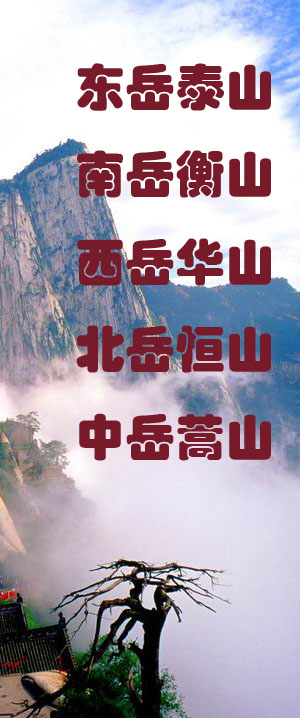
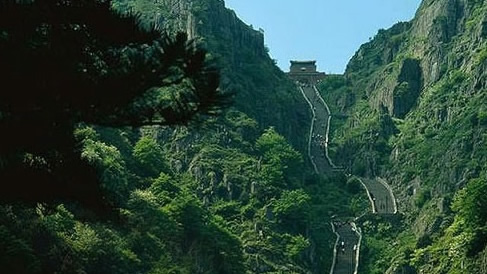
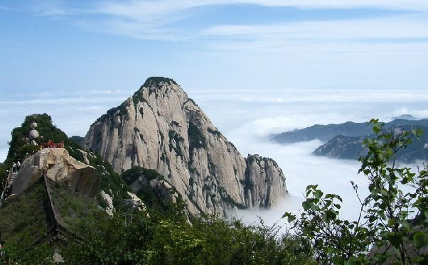
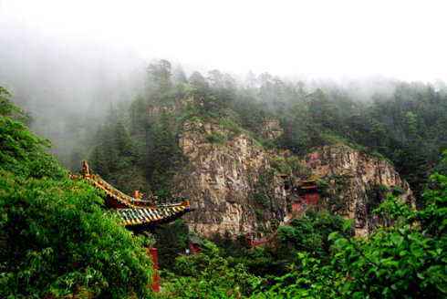
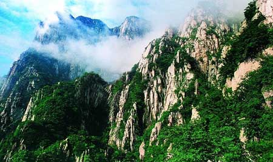

|  |
|
||||||||
东岳泰山： 泰山坐落在山东省中部，为中国五岳之首，古称“岱宗”，主峰玉皇顶，海拔1545米，高度居五岳第三位，但它却被历代称为“五岳独尊”，原因首先是泰山平地拔起，山势雄伟，更重要的是泰山在中国的政治、文化历史上占有很高的地位，它是历朝统治者祭天的场所，目前山上有古寺庙22处、古遗址97处、历代碑碣819块、摩崖石刻1018处。泰山山麓的岱庙为泰山第一名胜，天贶殿是岱庙主殿，殿内东、西、北三面墙壁画有《泰山神出巡图》。岱庙内陈列的沉香狮子、温凉玉、黄蓝釉瓷葫芦瓶誉为泰山镇山“三宝”。  西岳华山： 华山位于陕西华阴市城南。海拔2160米，以险峻著称。素有“奇险天下第一山”之誉。华山五峰为南峰落雁、东峰朝阳、西峰莲花、中峰玉女、北峰云台。峰上回心石、千尺幢、百尺峡、擦耳崖、苍龙岭均为名闻天下的极险之道。华山脚下西岳庙是历代帝王祭祀的神庙，创建于西汉，至今仍保存着明、清以来的古建筑群。因其形制与北京故宫相似，有“陕西故宫”之称。  南岳衡山： 衡山位于湖南中部衡山等县境内，海拔1290米。南岳古木参天，终年翠绿，奇花异草，四时郁香，以风景秀丽著称。南岳庙是衡山最大殿宇。祝愿融峰之高、藏经楼之秀、方广寺之深、水帘洞之奇，称为衡山四绝。近年又开辟了麻姑仙境、穿岩诗林新景点。
北岳恒山： 恒山位于山西省浑源县东，海拔2017米。相传4000年前舜帝巡狩四方，见此山势雄伟，遂封北岳。恒山分东西两峰，双峰对峙，浑水中流。山上怪石争奇，古树参天，苍松翠柏之间散布着楼台殿宇，以幽静著称。恒山景观之最为悬空寺，建于恒山金龙口西崖峭壁上。据恒山志记载，始建于北魏晚期（约公元6世纪），全寺有殿琮楼阁40间，在陡崖上凿洞插悬梁为基，楼阁间以栈道相通，风景优美，别具一格。  
|
|||||||||
|
copyright五岳管理委员会 版权所有 |
|||||||||